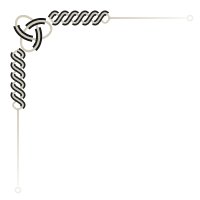
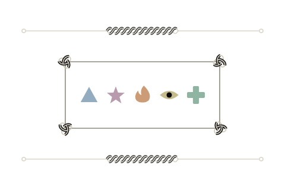

출시 계획
다음 달 출시 일정과 남은 작업을 정리한 문서입니다. 검토자 두 명이 의견을 남겼습니다.
| 이름 | 상태 | 크기 | 수정일 |
|---|---|---|---|
| 설정 백업 | 완료 | 1.2 MB | 10-29 14:02 |
| 이미지 변환 | 진행 중 | 48.6 MB | 10-29 13:40 |
| 로그 업로드 | 실패 | 312 KB | 10-28 22:15 |
| 이름 | 크기 |
|---|---|
| 데이터를 불러오지 못했습니다. 네트워크 연결을 확인하세요. | |
skald-01 프로젝트와 파일 214개를 지웁니다. 지운 뒤에는 되돌릴 수 없습니다.

다음 달 출시 일정과 남은 작업을 정리한 문서입니다. 검토자 두 명이 의견을 남겼습니다.
